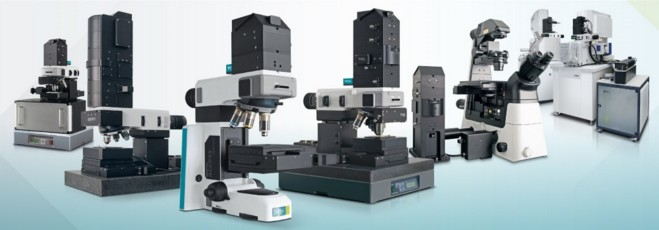

欢迎使用 WITec 操作指南
本指南说明了如何使用 WITec Suite，特别是 WITec Control，在 WITec 显微镜上执行测量。
WITec 产品组合包括用于拉曼、AFM 和 SNOM 分析的成像系统，可作为单一技术解决方案以及关联成像配置。所有 WITec 显微镜均采用高品质的模块化系统。因此，每台系统都是满足不同客户需求的个性化解决方案。您的系统可能无法使用本文所述的全部技术。如果您有兴趣扩展系统的功能，请联系我们。
WITec Control 配备了与您系统设置相匹配的预定义配置。配置决定了测量过程中使用哪些硬件以及记录哪些数据通道。本指南说明了各配置之间的差异以及如何使用它们。
概述
常用步骤：
技术